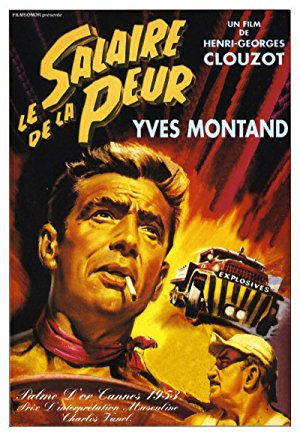
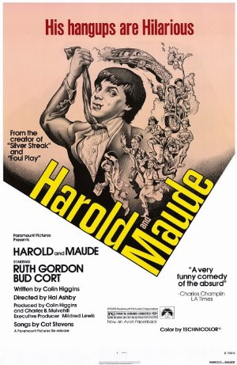
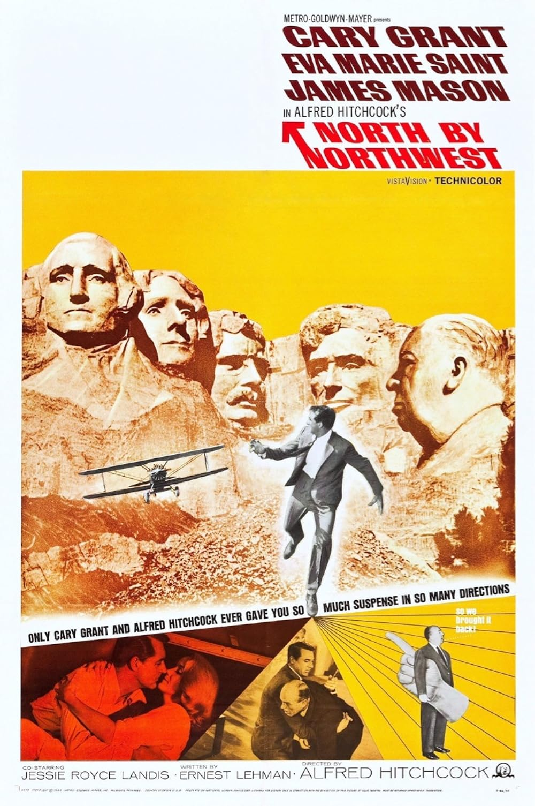

Season 55 (2024)
-
 April 14, 2024Directed by Carol Reed; Starring Joseph Cotten, Alida Valli, Orson Welles, Trevor Howard
April 14, 2024Directed by Carol Reed; Starring Joseph Cotten, Alida Valli, Orson Welles, Trevor Howard
The Third Man
UK, 1949, 93 min, B&W, Not RatedSet in the divided city of post-war Vienna, this film is one of the most stunning examples of black and white cinematography that you'll ever see. Holly Martins (Joseph Cotton) makes his way to Vienna at the invitation of an old chum, Harry Limes (Orson Welles). Upon Holly's arrival, he learns that Harry is dead, and the way Harry dies sounds questionable. Sensing a cover-up, Holly delves into the circumstances surrounding Harry's death while dodging the British occupying forces and several unseemly characters who know more than they're saying, all the while falling in love with Harry's grief-stricken lover who has troubles of her own. Fun, suspense, and art all combine in this atmospheric film treasure.
Film Notes (Mark Van Hook): There is perhaps no better film with which to celebrate the re-launch of The Cinema, Inc., than Carol Reed's immortal classic The Third Man. No film embodies the essential, bruising romanticism of the movies like this post-World War II masterpiece of intrigue and disillusionment, and no film serves as a better reminder of what great movies can be when viewed on as big a screen as possible with a big, appreciative audience.
The Third Man was directed by Reed from a script by, among others, the great novelist and critic Graham Greene, the second of their three collaborations that included The Fallen Idol (1948) and Our Man in Havana (1959). It begins jauntily enough, with Reed's classic voiceover (Joseph Cotten in the American version) welcoming Cotten's Holly Martins to divided, post-war Vienna to begin his search for his friend, Harry Lime. What begins as a simple murder mystery soon becomes a descent into the dark underworld of the post-war city, a journey that challenges not only Holly's optimism but his faith in humanity itself.
So many of the hallmarks of Reed's film must have seemed strange to audiences in 1949 – the off-center camera angles, Anton Karas' ostensibly happy-go-lucky zither score, the utter lack of romantic fulfillment. Yet it remains these qualities that give The Third Man its consistent staying power, and one can imagine how its world-weariness and themes of shattered illusions must have resonated with audiences traumatized by the war in the preceding years.
All this without yet mentioning the towering presence of one Orson Welles, whose contributions in front of and behind the camera are well documented – and, in the latter case, debated. The less said about his involvement for the unspoiled the better, except perhaps to relay that once you've seen the film you'll likely never think about cuckoo clocks in the same way again.
With a murderer's row of supporting performances and some of the most iconic sequences ever committed to film, The Third Man remains as close to a perfect movie as exists in this weary, broken world.Read Roger Ebert's review of The Third Man at Great Movies. -

May 12, 2024Directed by Henri-Georges Clouzot; Starring Yves Montand, Charles Vanel, Folco Lulli, Peter van Eyck
Wages of Fear
France/Italy, 1953, 131 min, B&W, Not Rated
In an isolated South American village, four desperate men accept a dangerous job: to transport an urgent nitroglycerin shipment without use of safety equipment. They traverse a treacherous and rugged dirt road through the mountains. You will feel every bump in the road as the rival drivers compete to deliver the nitro as quickly as possible without meeting a sudden, explosive death.
Film Notes (Ralph Ramos): What film won the best film at the British Academy Film Awards, Cannes Film Festival, and Berlin International Film Festival? The Wages of Fear!
The Wages of Fear is a rare gem. It is an unsparing look at human nature. Perhaps its dark vision can be understood when you know that the director, Henri-Georges Clouzot, started working in the French film world just as the German army subjugated France in World War II. Clouzot found himself appalled by the cruelty of the invaders and the lethargic collaborations of his own countrymen. But that darkness is not the heart of the story.
The reason this movie won awards is its masterful buildup of tension. It is a true thriller with the feeling that things can blow up at any moment – which, in this story, they literally can. Four anti-heroes are at the center of the plot. Each has a story of poor choices that has led them to where they are now. They are stuck in the hellhole of Las Piedras, a company town of a ruthless American oil company, somewhere in Latin America. There has been an oil fire, and the company must put it out before its profits burn up. The only way to do that is to blow it up using nitroglycerin. The four men are hired to transport 200 gallons of nitroglycerin over dangerous mountain dirt roads. The job is so dangerous that the four men and the nitroglycerin are each divided into two groups, hoping that at least one group will make it through. Will they?
The Wages of Fear is a mix of suspense, hope and fate. There is a reason this film has been remade a couple of times, and why it consistently ranks among the best foreign films of all times. -
 June 9, 2024Directed by Jacques Tati; Starring Jean-Pierre Zola, Adrienne Servantie, Lucien Frégis, Betty Schneider
June 9, 2024Directed by Jacques Tati; Starring Jean-Pierre Zola, Adrienne Servantie, Lucien Frégis, Betty Schneider
Mon Oncle
France/Italy, 1958, 117 min, B&W, Not Rated, French w/subtitles
Monsieur Hulot's nephew lives in an ultra-modern technological wonder of a house, far away from Hulot's haphazard apartment building in the old section of town. The boy naturally gravitates to his uncle's way of life, much to the dismay of his businessman father. Chaos ensues. So much of this film is "pure cinema" as it could be watched without subtitles. Tati incorporates many aspects of silent film into his creation, which won the Oscar for Best Foreign Language Film in 1959.
Film Notes (Pete Corson): Starring and Directed by Jacques Tati, whose main character Mr. Hulot never speaks (he performs as a mime or silent film actor). Soundtrack is composed of leitmotif music.
Mon Oncle is the first of Jacques Tati's films to be released in color. It won the Academy Award for Best Foreign Language Film in 1958, a special prize at the Cannes Film Festival, and the New York Film Critics Circle Award for Best Foreign Language Film.
The film centers on M. Hulot, a tall, thin, middle-aged Parisian who wears a rumpled overcoat and hat, carries an umbrella, and innocently creates chaos wherever he goes. The film was made at a time when France was recovering from WWII and dealing with its new-found consumerism, modern architecture, and an emphasis on work efficiencies.
The film opens with a street scene with the charm of pre-war Paris, where the citizens stop their daily lives at the drop of a hat to talk with whomever comes by and packs of neighborhood dogs run around looking for mischief.
M. Hulot is the innocent impractical uncle of nine-year-old Gerard Arpel, who lives with his materialistic parents in a new suburb of Paris. Their home has all of the modern conveniences that could be imagined, regardless of impracticality, and there is an air of artificiality to everything.
There is a fish-shaped fountain in the front yard that is only turned on when special visitors come to visit. The garage doors open only when an electric eye beam is interrupted. The chairs in the house are all modern and most uncomfortable. And you will love the kitchen appliances that require only the slightest touch to activate their functions. Everything is very modern and impersonal and intended to impress visitors.
Into this world comes M. Hulot who has no idea what any of these modernities are about. Gerard's parents help him get a job with the local factory that makes endless extruded plastic hose. He causes havoc in the factory wherever he goes, again very innocently. He is an anachronism in France's post-war world of the future.
Jacques Tati is a master at sight gags and he understands the planning that lies behind those gags. In his background, he has experience as an equestrian and circus performer. The gags that seem so simple and that expose our tendency to do irrational things require a master's touch in timing and placement.
You may wince at the truth behind his humor at times, but he is a master at holding up a mirror to us when we are at our most pompous. In contrast to most films, his tales are sets of observations on the human condition and the storyline is just a frame holding the observations together. Each incident can stand on its own.
His films are quite different from most and they are both funny and commentaries on our lifestyles.Read Roger Ebert's review of Mon Oncle at Great Movies. -

July 14, 2024Directed by Hal Ashby; Starring Ruth Gordon, Bud Cort, Vivian Pickles, Cyril Cusack
Harold and Maude
USA, 1971, 91 min, Color, Not Rated
It's a standard "Boy Meets Girl," premise, with a twist. Death-obsessed 20-year-old Harold (Bud Cort) meets life-affirming Maude, age 79. Sparks fly and their "alternative love-style" takes off. The cult film to end all cult films, this romantic black comedy is ranked #45 on the American Film Institute's list of 100 funniest movies.
Film Notes (Karen Bender): Some loves are meant to last forever. While this may not be true for the subjects of this month's film selection, it certainly is when it comes to my regard for Harold and Maude. It may not be the best film that I've ever seen, and it certainly is not the worst. But it did inspire a deep affection – dare I say 'love' – that has spanned the time from when I related to the Harold character until now, when I can better relate to Maude. Harold and Maude speaks to me now as vibrantly as it did then.
I first saw this film when I was 19 years old and attending college. Our university screened films every Friday and Saturday evening, allowing me to see everything from Kurasawa to John Waters and back again, and at a price range that I could afford – for FREE. I had no idea what this film was about when I set out to see it, but from the very first scene with its beautiful natural lighting, the subdued sound effects, and the perfect fusion of the visual with the Cat Stevens soundtrack, I was entranced, hooked, completely smitten.
Everyone has a bare-bones idea of what this film is about – a depressive young man fakes suicide attempts for the 'benefit' of his self-absorbed mother. His obsession with death allows him to meet octogenarian Maude who, like Harold, attends funerals for fun. The difference is that Harold is morbidly fixated on death and Maude sees death as part of life, which she lives to its fullest. Their inevitable love affair is a true 'yin and yang' situation, as the wayward Maude serves to counterbalance the messages of conformity that Harold's mother attempts to pass on to Harold. Harold gains enlightenment and grows to embrace a more seasoned and fuller concept of life at the end of his journey with Maude.
Harold and Maude is an expression of post-60s society – a society that has gotten past the major convulsions of the anti-war protests and the sexual revolution and is trying to come to terms with what it all means. In effect, it describes the failure of the counterculture to attain its lofty goals. The powers that be are still the powers that be, and class distinctions still exist in this film.
The characters of Harold's mother, uncle, and priest represent the influence of society stifling the spirit of a rebellious young man who, unlike the street activists of a few years before, internalizes his revolution and acts out his discontent by staging mock suicides for the benefit of his mother. Harold is stultified by privilege and while he wants to live a free life, he can't bring himself to strike out on his own and give up the comforts of an upper-class existence. Thus, he remains a depressed and repressed adolescent even though chronologically he has become a young man.
While Harold and Maude is a film about self and personal revolution, it also criticizes some of the messages of the counterculture. Maude's personal philosophy aligns with pop-cultural messages of the '60s – live and love freely, don't be tied to possessions, and stand up for the big issues. But the fact that these messages are coming from an 80-year-old character subverts the "wisdom" of 60's youth culture since not that long before, young people had been exhorted not to trust anyone over 30.
Despite all these heavy messages, Harold and Maude is ranked 45th on the American Film Institute's list of 100 Funniest Movies of all time and was selected for preservation in the National Film Registry of the Library of Congress in 1997 for being "culturally, historically, or aesthetically significant." This is quite an accomplishment for a film that was a commercial flop in its original release and received extremely mixed critical reception. However, it has since developed into a much-loved film with a cult following.
So be prepared to find yourself in this film, whether you are the suppressed Harold or the free-spirited Maude. And be prepared to fall in love. -

August 11, 2024Directed by Alfred Hitchcock; Starring Cary Grant, Eva Marie Saint, James Mason
North by Northwest
USA, 1959, 136 min, Color, Not Rated
A case of missing identity sets Roger O. Thornhill (Cary Grant) on a desperate cross-country trip with a mysterious blonde (Eva Marie Saint). He rubs elbows with spies (James Mason and Martin Landau), gets arrested, finds himself under fire at a national landmark, experiences the qualities of train travel versus air travel, and has an interesting lesson in Modernist architecture. Directed by the King of Suspense, this film is entertaining, wryly comedic, and drenched in Technicolor. If you've only seen it on television, you really haven't experienced this film.
Film Notes (Karen Bender): "The Wrong Man Meets the Modernists" is a shorthand way of describing the plot of Hitchcock's North by Northwest. Roger O. Thornhill (Cary Grant), an urbane "Mad Man", is plunged into a desperate cross-country race to clear his name when he's wrongly accused of a high-profile murder.
Along the way, Thornhill pursues a pair of villainous thugs (James Mason and Martin Landau) who are trying to kill him for reasons at first unknown. In turn, Thornhill is being pursued by Eve Kendall (Eva Marie Saint), ostensibly for Thornhill's abundant sex appeal, or is there another reason? And the chase from the towering skyscrapers in New York to the Black Hills of South Dakota lands them all, for better or worse, in a Modernist masterpiece of a house where heinous plots are being hatched.
I've seen this picture several times, with the most memorable occasion when I viewed it in 70 mm at Grauman's Chinese Theatre in Hollywood. You may think that you know this film but seeing it on a large screen (or in my case, an enormous screen) is a different experience. Action sequences that we experience as comfortable set pieces when viewed on TV at home morph into visceral, adrenaline-laced scenes that come with a gut punch.
The entire production is drenched in 1950s art design. The trains, the cars and trucks, and the costumes beautifully evoke the era in Technicolor. It's almost enough to make one regret that one's entire wardrobe seems to consist of stretch materials that never need tailoring or ironing until I recalled the horror of the crinoline slips to which I was sadly subjected as a child.
There's a lot of Hitchcockian humor mixed into the labyrinthine plot, so you can relax with a little giggle now and then. Cary Grant claimed that he still didn't know what the movie was about when one-third of the film was in the can! Luckily, that's not the case with the finished film. And if by some chance you can't follow it, just relax, and experience this mad dash across the US with the Master of Suspense as your Tour Guide.